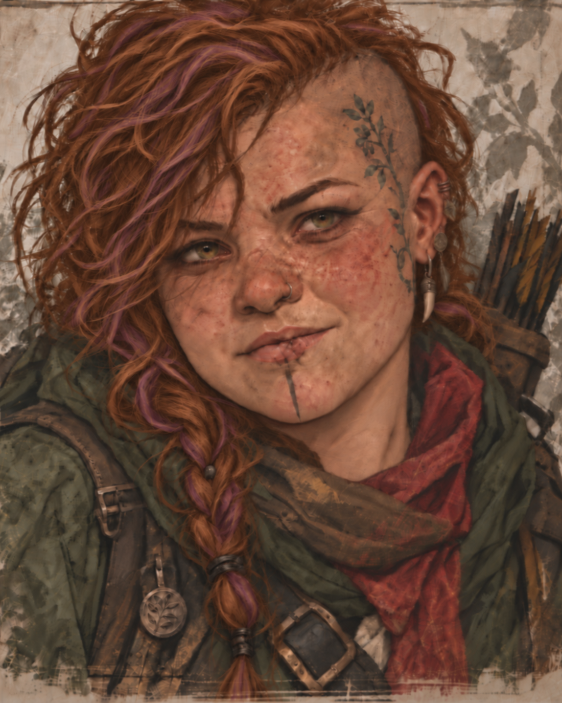
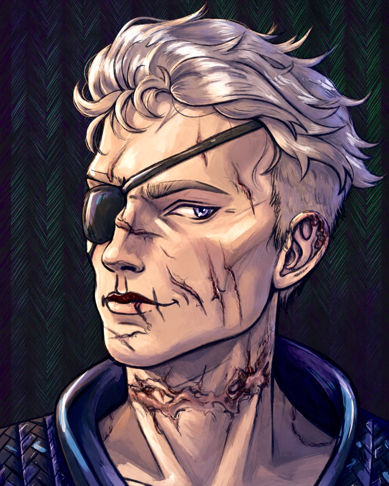
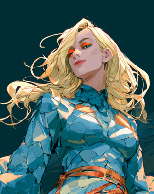
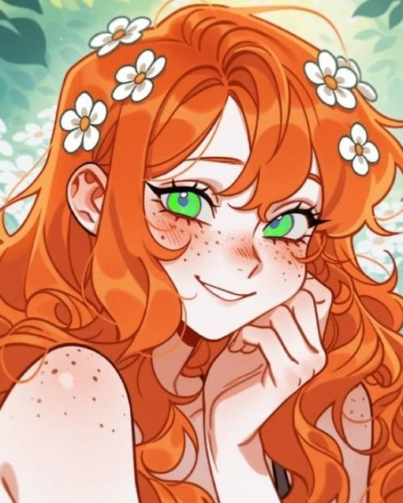

GRACZ
Miauriusz
Pelagietta
Ranger. Jedna z czterech osób, które weszły we mgłę i nadal próbują zrozumieć zasady Barovii.
Kraina, która nie chce wypuścić swoich gości. Stara klątwa, nowe legendy, dawne miejsca i historia, która pod powierzchnią gotyckiej grozy okazuje się znacznie większa niż sam zamek.
Common Character Card — cztery egzemplarze w identycznej strukturze.

Ranger. Jedna z czterech osób, które weszły we mgłę i nadal próbują zrozumieć zasady Barovii.

Paladyn. Strzeże własnego celu, choć sama Barovia ma dla niego znacznie inne plany.

Bard. Nie wszystkie odpowiedzi, które znalazła w Barovii, były odpowiedziami, których chciała.

Druid. Tarokka, sny i Strahd sprawiły, że jej historia bardzo szybko przestała być zwyczajna.
Common Chronicle — natywne rozwijanie notatek i ręcznie podane nagrania.
Drużyna podróżuje Drogą Swołoczy, traci woźnicę Havoka i zatrzymuje się przy tajemniczym weselu Witalija i Julii. Pchełka otrzymuje niepokojącą wróżbę Tarokka, a Strahd zaczyna interesować się Luką.
Drużyna wchodzi do posiadłości Lugossiego i odkrywa pozornie zamieszkany dom, trofea, broń oraz kolejne ślady nadnaturalnej działalności. Po konfrontacji wszyscy giną, a następnie budzą się uratowani przez Rahadina.